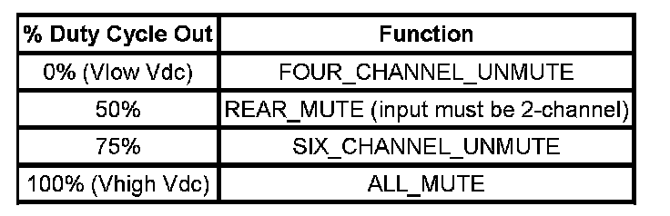
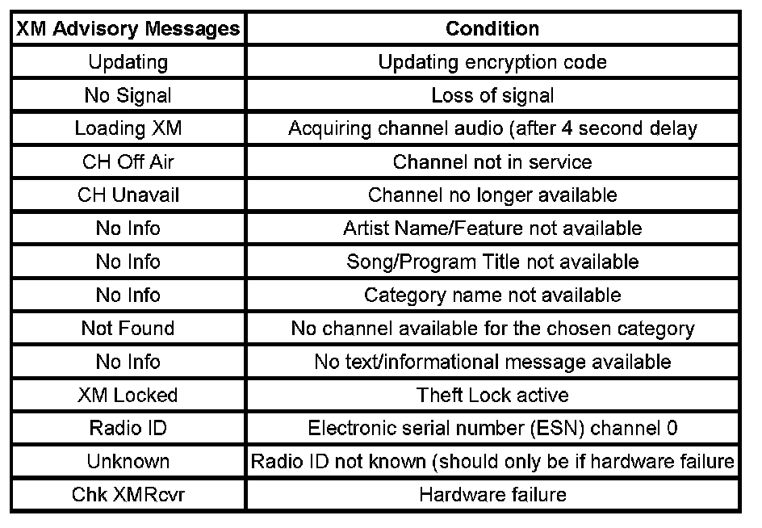

Radio/Audio System Description and Operation
RADIO/AUDIO SYSTEM DESCRIPTION AND OPERATION
CONTENTS
- RPO options
- Circuit description
- Component description
- Theft deterrent feature
- Customer tips
RPO OPTIONS
The entertainment system on this vehicle is configured with either a base or uplevel audio system. Both the base and uplevel audio systems contain a radio, antenna, and speakers. The following shows the Entertainment RPOs that are available for this vehicle:
- (UM7) AM/FM Stereo
- (U1C) AM/FM Stereo CD
- (US8) AM/FM Stereo, CD, MP3, RDS, EQ
- (US9) AM/FM Stereo, 6-Disc CD, MP3, RDS, EQ
- (UVA) AM/FM Stereo, CD, DVD, MP3, RSE Video
- (UQ5) Base Four Speaker, No Amplifier
- (UQ3) Uplevel Six Speaker, No Amplifier
- (Y91) Premium (Luxury) GMC Denali
- (UQA w/o Y91) Non GMLAN Bose Amplifier
- (UQA w Y91) GMLAN Bose Amplifier
- (UQS) Cadillac Premium Amplifier
- (U2K) Digital Radio
CIRCUIT OPERATION
Radio Power
The main radio power is supplied by a 15A fuse located in the under hood fuse block. The radio does not require a discrete ignition feed circuit for power moding. The power moding is accomplished using a structure of Virtual Networks (VN). The Power Mode Master (PMM) transmits the GMLAN power mode signals.
The radio supports the following signals:
- System Power Mode
- Infotainment Operation Allowed
The radio also supports the following GMLAN Vehicle Power Modes:
- OFF
- ACCESSORY
- RUN
- CRANK REQUEST
Radio Ground
A wire in the main radio connector that is connected to battery negative at all times provides the main radio ground. Resistance between the ground pin and the vehicle battery negative terminal must not exceed 0.05 ohms.
Radio Speaker Outputs
At low volume, the plus (+) and minus (-) speaker outputs circuits measure approximately 7-8 volts. If a plus or minus circuit for any speaker output is shorted to ground or voltage, the radio disables the circuit for component protection and sets a diagnostic trouble code (DTC). The radio sets the speaker circuit DTC on non-amplified systems only. As the radio volume increases the voltage on the plus and minus circuits change to create a voltage difference between each other. The difference in voltage is what drives the voice coil of the speaker producing sound.
Radio Head Unit Dimming
GMLAN signal data received by the radio determines the radio dimming and backlighting levels. The radio sets the backlight and VF display dimming to the value indicated by the interior dimming level and interior dimming display level signals in the GMLAN dimming information frame. The radio provides faceplate and control/graphics backlighting in the OFF (RAP inactive) when the exterior lighting virtual network (VN) is activated. The radio display is consistent then with the surrounding devices that use analog PWM dimming to backlight their control/graphics when the power mode is OFF and the park lights are ON.
Amplifier Interface UQ3 (Non-GMLAN)
The main amplifier power is provided by a 20A fuse located in the body control module (BCM). A discrete switched 12 volt output is used to control the power - state of the amplifier. To respond quickly to audio input and control signals, the amplifier is ON in all vehicle power modes except OFF and CRANK Request. However, when the amplifier is asleep it still must allow chime functionality. The internal amplifier bridges are fully powered and unmuted when the amplifier receives the switched 12-volt input.
The radio provides a remote amp mute output circuit to control overall muting of remote non-GMLAN amplifiers with rear seat audio (RSA) applications. The amplifier receives PWM signals on the circuit at varying duty cycle percentages for controlling the muted and unmuted functions of the amplifier. The RSA Enable circuit in the radio enables the rear seat channel muting of the amplifier. A Diag Sense circuit internal to the radio monitors the remote amp mute circuit for faults and sets the appropriate DTC when detected.

The function table shows the four possible amplifier mute functions.
Amplifier Interface UQA (GMLAN)
The main amplifier power is provided by a 30A fuse located in the under hood fuse block. For vehicles equipped with UQA, the radio commands the amplifier to perform the following functions through serial data (GMLAN) communication. The radio controls both the overall muting and the rear seat muting via serial data (GMLAN) messaging.
- Volume
- Balance
- Fade
- Bass
- Midrange
- Treble
- DSP Modes
- Volume Compensation
- Chime Output
Amplifier Radio Speaker Inputs
The low-level audio signals (LF, RF, LR, and RR) from the radio are the inputs to the amplifier. The amplifier boosts these inputs and outputs them to the vehicle speakers. If one speaker plus or minus low level audio signal circuit is open between the radio and the amplifier, the input to the amplifier is approximately half. The speakers for that channel then operate at approximately half the normal volume or in some cases no volume.
The low level audio signals from the radio to the amplifier typically measure in the 4-5 volts range.
Amplifier Speaker Outputs
At a low volume, the plus (+) and minus (-) speaker outputs circuits measure approximately 2-7 V AC or 7-8 V DC at the speaker connector when testing a normal working system. If a plus or minus for any speaker output is shorted to ground or voltage, the amplifier circuitry will turn OFF the front outputs or rear outputs for component protection.
Repeat speaker failure can be caused by a damaged amplifier. Test for a damaged quad bridge output in the amplifier if the wiring between the amplifier and speaker test negative for a short to voltage. Prolonged exposure to DC voltage can cause a speaker coil to short. An early indication of a shorted speaker coil is distortion/noise and eventual failure.
Remote Radio Audio Signal Inputs (UE1 only)
Audio output from the OnStar(R) communications module connects to the remote audio signal inputs of the radio. When the cellular telephone mute signal goes to 0 volts, the radio over-rides any other audio signal and uses these inputs as the source for the output to the speakers.
Cellular Telephone Mute (UE1 only)
The OnStar(R) communications module uses the cellular telephone mute signal circuit to over-ride the radio for OnStar(R) communication. When cellular telephone mute is not active, this circuit is held at 1-volt by the radio. When the cellular telephone mute signal is pulled to ground, the radio over-rides any other audio signal and uses the remote audio signals as the source for output to the speakers. If the radio was OFF when this circuit is pulled low, the radio will turn ON. Additionally, the radio fades the speakers to full front, adjusts the volume to an initial audible level, and sets an Auto Tone designed for optimal use with OnStar(R). When the mute signal is no longer pulled to ground, the radio returns to the mode it was in previously.
COMPONENT DESCRIPTION
Antenna System
The antenna system receives broadcast AM or FM stereo signals from free space and sends the signals to the radio receiver for processing via a coaxial antenna cable. Good antenna grounding is important for good radio reception.
Radio
The operator interfaces with the radio system through the radio display and controls. Through these controls the operator is able to control system power, volume, fade, balance, bass, and treble equalizations. Control on the integrated CD, MP3, or XM Satellite Radio system is also available when equipped with these options. A VFD (vacuum florescent display) provides system feedback to the operator.
The radio processes the AM and FM signals from the antenna system or the information from the CD media, amplifies that information and sends the output to the speaker system.
The radio is located in the instrument panel center stack area and is fastened to the instrument panel by fasteners. A rear bullet type guide pin is provided to aid in aligning the radio. An electrical connection to the radio is a 30-way connector that is part of the I/P harness, antenna lead connector, and an additional 16-way harness connector is present on OnStar(R) equipped vehicles. Additional service length is provided in the radio harnesses to allow connection prior to radio installation.
Radio amplifier outputs to the speakers are protected from damage should speaker leads become shorted to ground or shorted to vehicle power. The radio will sense these conditions and shut down the amplifier outputs in a non-destructive manner. After the short condition is removed, the radio will return to normal operation.
UVA Radio
The UVA radio is a dual play radio that supports the playback of CDR, CDR/W and CDROM media with software decoders for MP3 format.
Speakers
The base model speaker system consists of six speakers. Four 6-inch speakers are mounted in each of the doors. Two 1-inch tweeter speakers are mounted in the A-pillars. The uplevel speaker system adds two 1-inch tweeter speakers are mounted in the D-pillars, subwoofer and an amplifier.
Auxiliary Jack Socket
The AM/FM Stereo CD radio shall provide a 3.5 mm Auxiliary stereo jack that will allow playback of audio signals from remote devices (e.g., portable tape player, portable CD player or MP3 playback device, etc.).
OnStar(R)
OnStar(R) equipped (RPO UE1) vehicles use the radio amplifier and speaker system for voice communication from the OnStar(R) operator to the vehicle. Voice communication from the vehicle to the OnStar(R) operator is through the OnStar(R) microphone and module, which is not a part of the radio system.
When OnStar(R) begins operation, the radio volume is set to a preset level, auto tone preset for OnStar(R) becomes active and the fade control is adjusted to the full front speakers. The radio volume control can then be used to adjust the volume to a desired level.
The radio system and OnStar(R) system are connected through the 16-way connector at the back of the radio. Left and right channel OnStar(R) audio, mute control of radio functions by OnStar(R) and the audio signal ground are the circuits provided in the 16-way connector. Disconnecting the 16-way connector from the radio will isolate the radio system from the OnStar(R) system.
Voice communication from the vehicle to the OnStar(R) operator could be possible under this condition. However, the vehicle occupant will not be able to hear the OnStar(R) operator.
For more information regarding radio operation problems, refer to Symptoms - Radio, Stereo, and Compact Disc - Symptoms - Radio, Stereo, and Compact Disc
THEFT DETERRENT
The radio theft deterrent system is intended to disable radio functionality if incorrect vehicle information is received by the radio. The radio disables functionality if the VIN information received by the radio does not match the VIN information that has been learned by the radio. A VIN sequence is the last 6 digits of the VIN. The radio receives this information in a GMLAN frame form.
The radio shall provide the following theft operating modes as part of the radio theft deterrent system:
- No VIN Mode-A radio that has not received or learned a VIN. In this mode the radio has limited functionality.
- Normal Mode-A radio has received a VIN sequence. The radio only learns the VIN sequence if the VIN sequence contained all 6 digits. In this mode the radio has full functionality.
- Theft Detected Mode-A radio that had previously learned a VIN sequence and subsequently received a VIN sequence not matching the learned sequence. In this mode the radio has limited functionality.
CUSTOMER TIPS
Radio Reception FM
- The Best FM fidelity will be obtained from stations within 16-64 km (10-40 mile) range. Noise or distortion may become apparent when attempting to receive stations at distances greater than this range. Suggestion: Reduce treble response when attempting to receive fringe stations.
- Tall buildings or hills may cause a degraded or lost signal. FM signals tend to travel "line of sight". Suggestion: Reduce treble response around tall buildings.
- Although receiver circuits are among the most advanced type available, there are instances where one radio station can interfere with another station. Suggestion: Select another station or switch to a cassette or CD.
Radio Reception AM
AM reception is sensitive to storm disturbances such as lightning. Suggestion: Reduce treble response or switch to FM.
Care of Compact Discs
- Handle compact discs (CDs) carefully. Touch only the outer edges of the CD or the edge of the hole in the center of the CD. Never touch the glossy side of the CD. Fingerprints and scratches will interrupt the "reading" of the information on the disc.
- Store CDs in their protective cases. Store CDs away from sunlight, dirt, dust, and debris.
- Do not attach a label or tape to a CD.
- Always check for scratches and signs of wear on both sides of the CD.
- Never place any marks on the CD with a marker.
- If a CD becomes contaminated, clean it with a clean, damp, soft, lint-free cloth and mild detergent. Wipe the CD in a straight line from the center hole outward. Do not use cleaning solutions which may damage the CD, such as chemically treated cleaning cloths, benzene, or paint thinners.
Compact Discs Not Appropriate to Use
These CD players were designed to be compatible with round digital audio CDs with the "Compact Disc Digital Audio" label. Other CDs may be incompatible, causing a no-play condition, excessive skips, and "ERR" shown on the radio display or a jam in the loading mechanism. Some incompatible CD types are:
- Special-shaped CDs (any that are not round)
- Re-Writeable CDs (CD-RW type are incompatible
- Recordable CDs (CD-R type are incompatible, except with US8 or US9 radios
- Library CDs (with thick bar code labels)
- CD with User-applied labels
AM/FM RECEPTION
Radio Signal
The radio signal is sent from a broadcast station and is then received by an antenna. The strength of the signal received depends on the following:
- The power output, or wattage, of the broadcasting station
- The location of the vehicle, or receiver, relative to the broadcast tower.
- Obstacles between the tower and the receiver
- Atmospheric conditions
- Which band, AM or FM, the station is broadcasting
- Type of antenna and the ground plane
AM Reception
The AM band has a lower frequency range than the FM band. These longer wavelengths:
- Bend around obstacles
- Follow the curvature of the earth
- May reflect, or skip, off of the ionosphere
The AM frequencies have longer range due to the ground wave. The ground wave follows the curvature of the earth and is affected by its conductivity. Greater conductivity equates to less signal loss, thus transmission over water is better than over land. The AM band has a range of 80-320 km (50-200 mi).
FM Reception
The shorter wavelengths of the higher frequency FM band:
- Reflect off obstacles
- Are absorbed by the ground
- Penetrate the ionosphere
Broadcasts in the FM band are limited to "line of sight" reception which is typically 40 km (25 mi). Even when out of a direct line of sight, the signal may be reflected into areas that would be in a "shadow" otherwise. Factors which affect the line of sight include:
- Height of the broadcast antenna
- Height of the receiving antenna
- Terrain and buildings in the broadcast path
XM Reception
XM satellite radio provides digital radio reception. The XM signal is broadcast from two satellites and, where necessary, terrestrial repeaters. The high power satellites allow the antenna to receive the XM signal even when foliage and other partial obstructions block the antennas view of the satellite. Terrestrial repeaters are used in dense urban areas. These repeaters will receive the satellite signal and re-broadcast them at much higher power levels in order to ensure reception in areas with densely packed tall buildings.
XM Satellite Radio
XM is a national satellite radio service that offers up to 100 coast to coast channels including music, news, sports, talk and children's programming. XM provides digital quality audio and text information, including song title and artist name. A service fee is required in order to receive the XM service. For more information, contact XM at www.xmradio.com or call 1-800-852-9696.
Digital Radio Receiver
The radio controls communicate with the digital radio receiver via the serial data communication circuit. The digital radio receiver sends remote radio audio signals to the radio.
Viewing Messages

Press the DISP or RCL button while in XM mode to view various pieces of information related to the current song or channel. By pressing and releasing the DISP or RCL button, you may view four different categories of information: Artist Name/Feature, Song/Program Title, Channel Category, and other Additional Information that may be broadcast on that channel. Additional Information messages may not always be available. If an Additional Information message is being broadcast on the tuned channel, the INFO icon will appear on the display. Each of the four information types may have multiple pages of text. To reach a category, press and release the DISP or RCL button consecutively until the desired type is displayed. If there are multiple pages of text for the selected information type, the radio will automatically display all the pages for that type at a rate of approximately one page every three seconds before timing out and returning to the default display. You may override this feature by pressing the DISP or RCL button to review all of the pages at your own pace.
Technical Information for the MP3/CD Radios (US8, US9 and UVA)
The US8 and US9 radios will play both standard audio CDs and CD-Rs or CD-RWs. The CD-R/RWs may contain either standard audio (-.cda) or compressed audio (-.mp3). Customers who record their own music CD-R/RWs should be aware of the following:
- The files can be recorded on a CD-R/RW disc with a maximum capacity of 700 MB.
- The radio will play only compressed audio files recorded in the -.mp3 format. It also supports playlists that can be made and saved with popular MP3 software (in the -.m3u format). A playlist name must be no more than 32 characters in length. If the name of a playlist is longer than 32 characters, the radio will ignore the playlist.
- The radio will only play audio from a CD-R/RW, it cannot record audio.
- The radio will play a mixed mode CD-R/RW (one recorded with both -.cda and -.mp3 files). If a mixed mode CD is inserted in the radio, the radio will assign the standard CD audio to a directory which is listed as ROM audio directory.
- The radio supports multi-session discs, but only the files from the last session will be played.
- There are a total of 20 directories (folders) allowed on a disc. The file structure can be 0-4 directories deep (a folder within a folder, within a folder, etc). Anything more than 20 directories will be ignored. Each directory may have up to 99 files contained within it. Files not having the -.mp3 extension will not be played, but still count toward the maximum. Anything more than the first 99 files within a directory will be ignored. A single disc may have up to 254 files and directories. Anything beyond the 254 limit will be ignored.
- MP3 files must be written to a CD-R/RW in one of the following industry-standard formats:
- ISO 9660 Level 1
- ISO 9660 Level 2
- Juliet
- Romeo
- ID3 tag information is displayed by the radio, if available. The ID3 tag information can either be version 1 or 2. The radio will display the filename, song name, artist name, album name, directory name, and playlist name, etc.
If the customer does not follow these guidelines when recording a CD-R/RW, the disc may not play in the US8 or US9 radio.